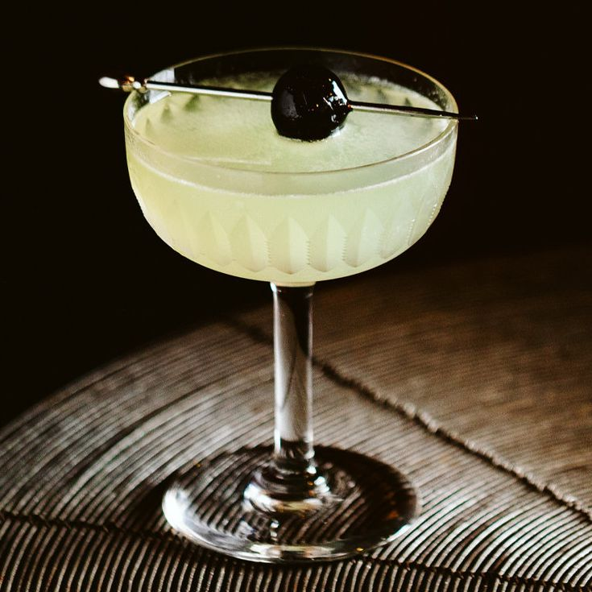

Last Word

Simple Last Word Recipe
A simple cock tail recipe. See the instructions below!
Ingredients
- 3/4 ounce gin
- 3/4 ounce green Chartreuse
- 3/4 ounce maraschino liqueur
- 3/4 ounce lime juice, freshly squeezed
- Garnish: brandied cherry (optional)
Steps
- Add the gin, green Chartreuse, maraschino liqueur and lime juice into a shaker with ice and shake until well-chilled.
- Strain into a chilled coupe glass.
- Garnish with a brandied cherry (optional).